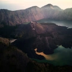
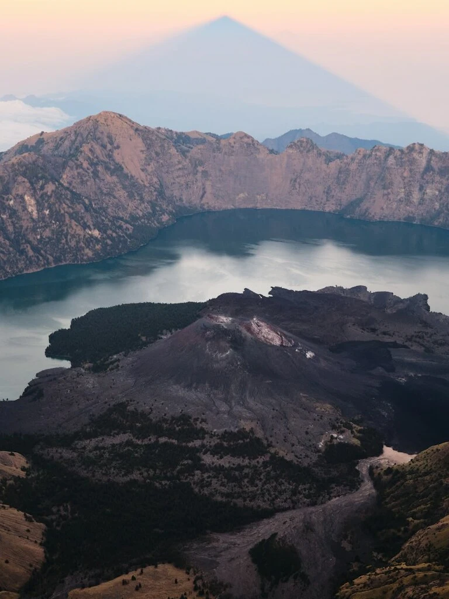
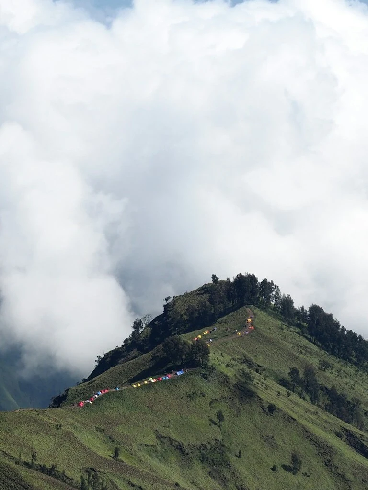

capture beautiful moment inside lens and shutterspeed
landscapewildlifearchitecturaltravelportrait

Lonely life at the Baltimore
Shoot with Sony a6000

Lonely life at the Baltimore
Shoot with Sony a6000

Lonely life at the Baltimore
Shoot with Sony a6000
(01)
About Us
we ardently strive to encapsulate life's most precious moments, weaving
a tapestry of artistry and a hint of enchanting magic with the timeless
essence of the human experience.
Photography is driven by a deep passion for
capturing life's most
precious moments with artistry and a touch of magic
(02)
Our Expertise
When moments captured every dreams crafted into beautiful reality
explore the artistry and precision behind our
portfolio of timeless photography
embark on a visual journey through our cherished moments captured with
creativity and precision. each image in our portfolio reflects our
dedication to preserving life's beauty and significance.
wildlife portraitsnaturemammals#2023
majestic creatures of the african savanna
capturing the exquisite patterns and dynamic energy of africa's most
iconic big cat
a temple's serene silhouette
moments framed in portraits
(04)
Awards
Award is a pixel that reflecting our
ongoing dedication to innovation and excellence
A Quiet Afternoon in the Countryside
As the sun gently descends in the western sky, casting a warm
golden glow upon the rolling hills and meadows, the countryside
settles into a tranquil serenity
2015
Sony World Photography Awards
A Quiet Afternoon in the Countryside
As the sun gently descends in the western sky, casting a warm
golden glow upon the rolling hills and meadows, the countryside
settles into a tranquil serenity
2017
Travel Photographer of The Year
A Quiet Afternoon in the Countryside
As the sun gently descends in the western sky, casting a warm
golden glow upon the rolling hills and meadows, the countryside
settles into a tranquil serenity
2022
Magnum Photography Awards
A Quiet Afternoon in the Countryside
As the sun gently descends in the western sky, casting a warm
golden glow upon the rolling hills and meadows, the countryside
settles into a tranquil serenity